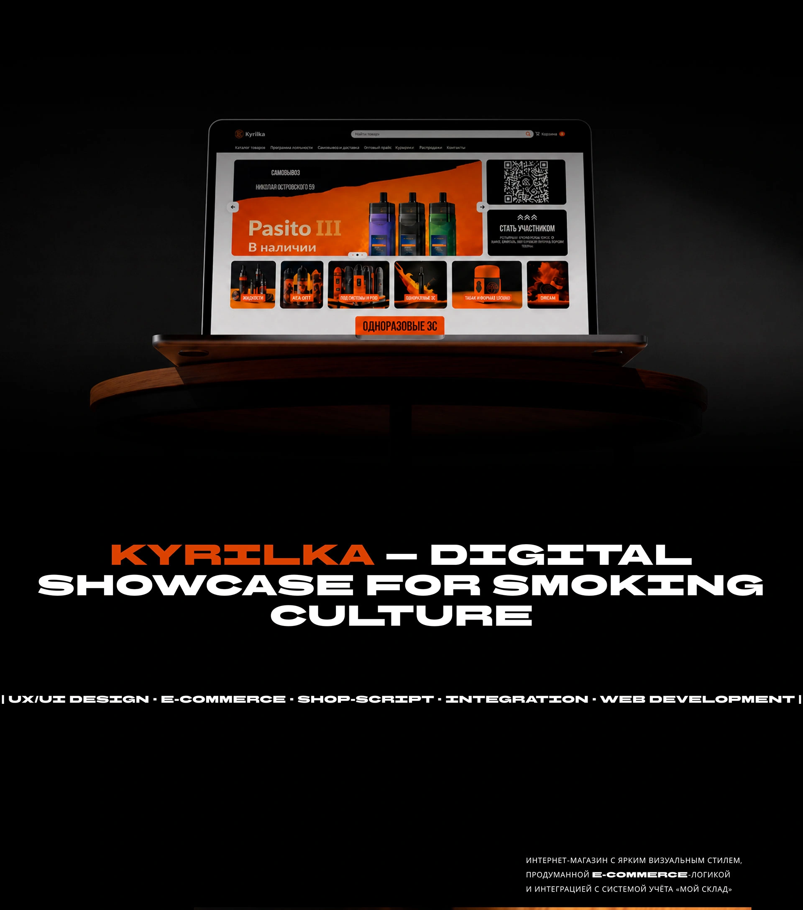
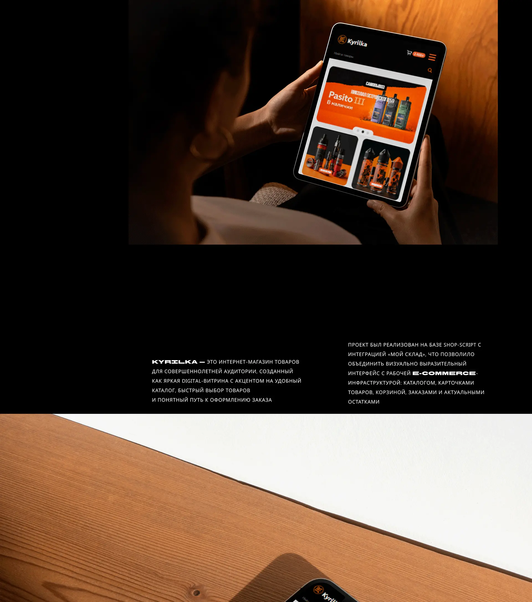
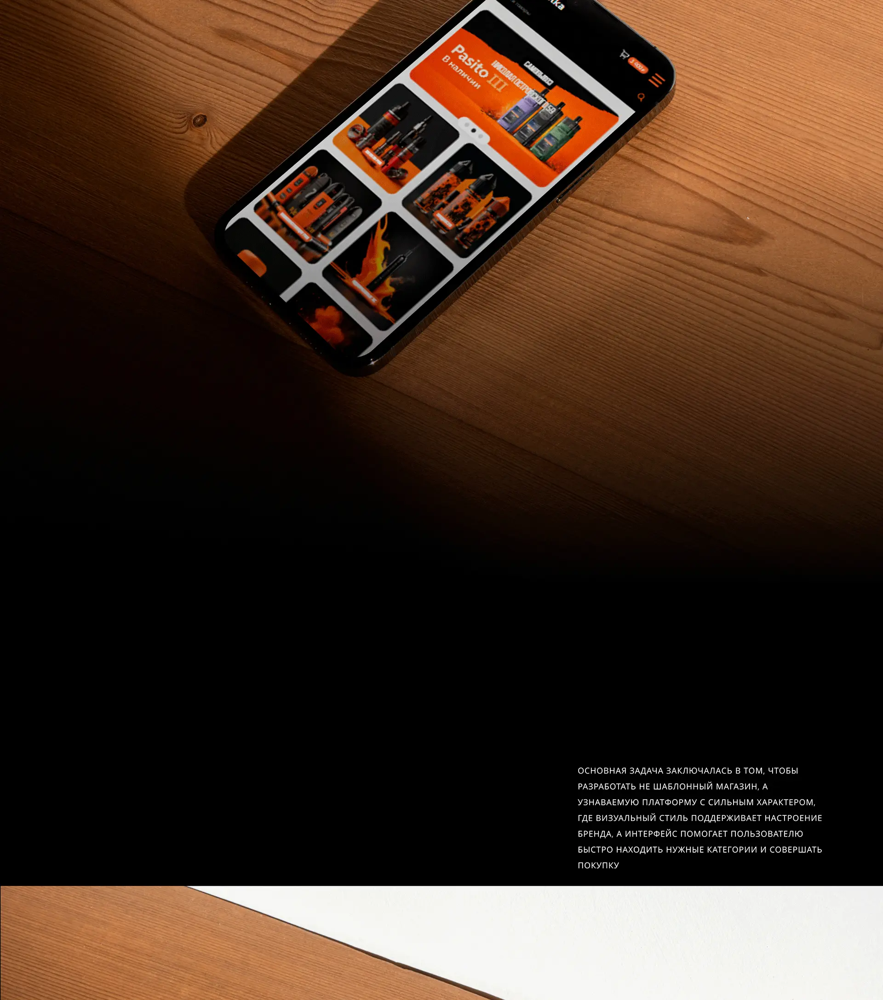
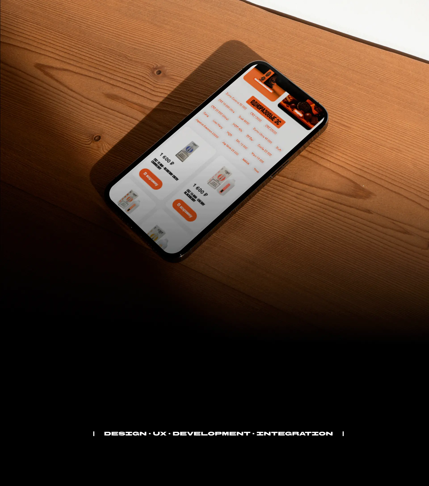
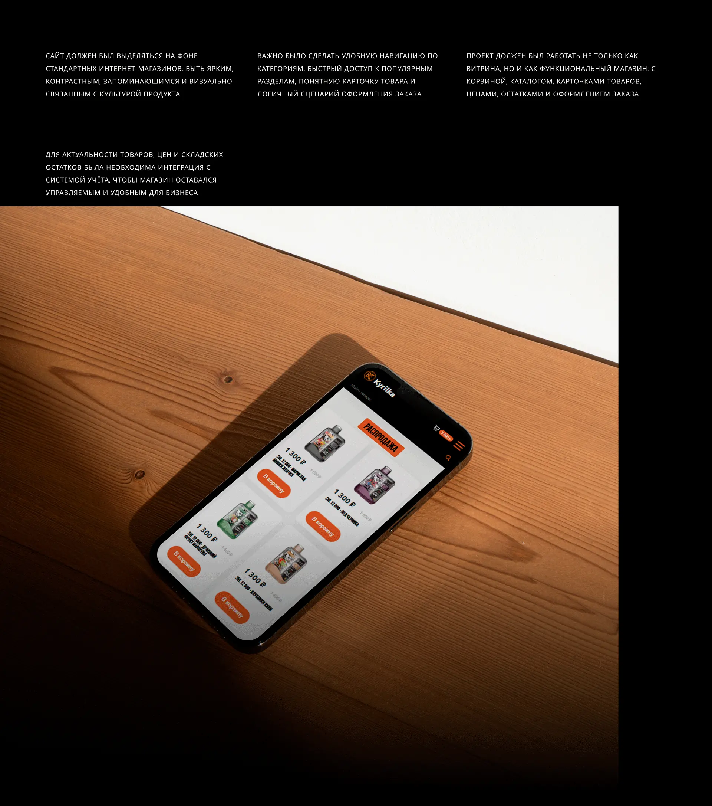
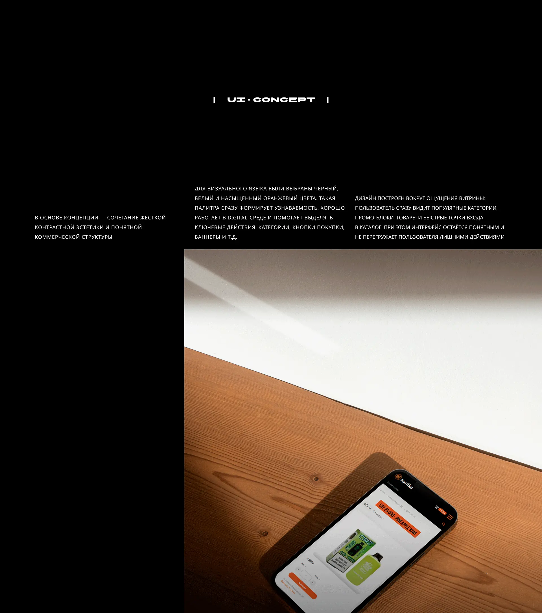
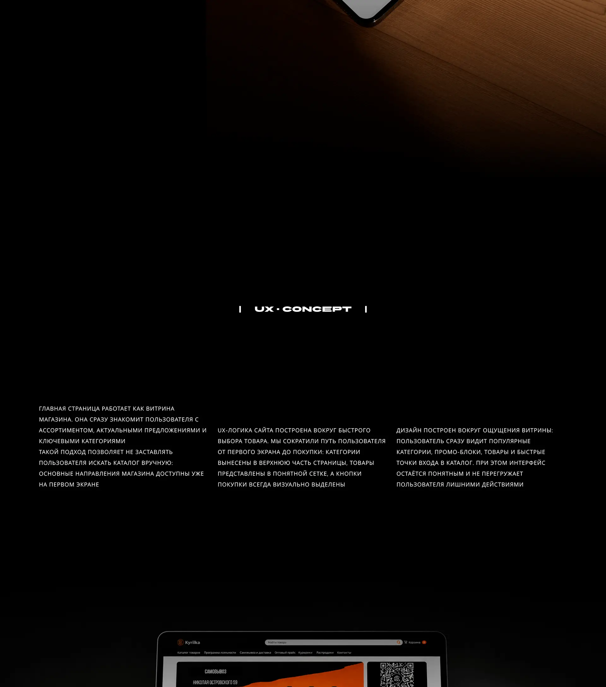
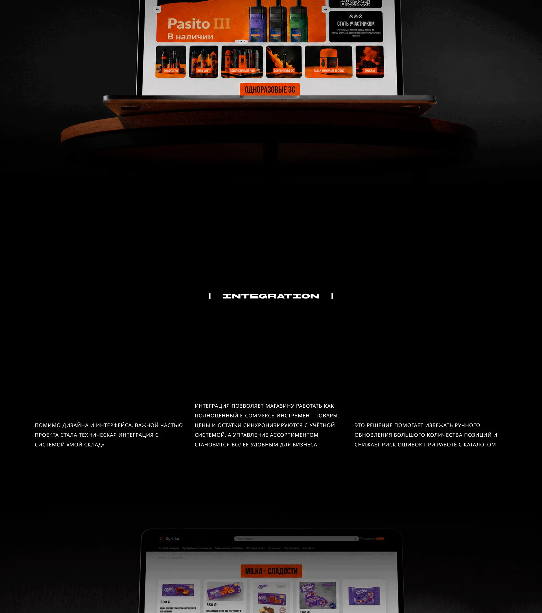
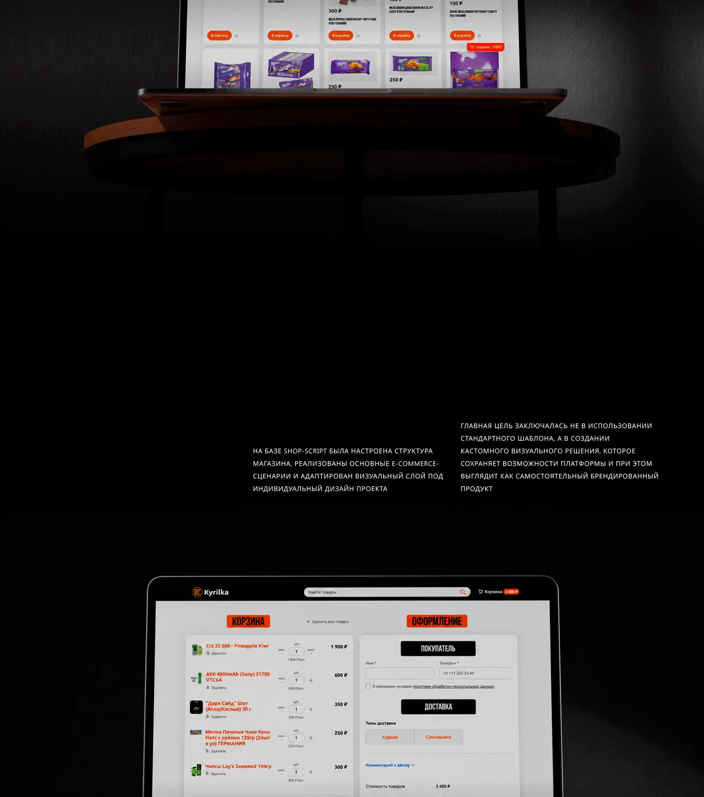
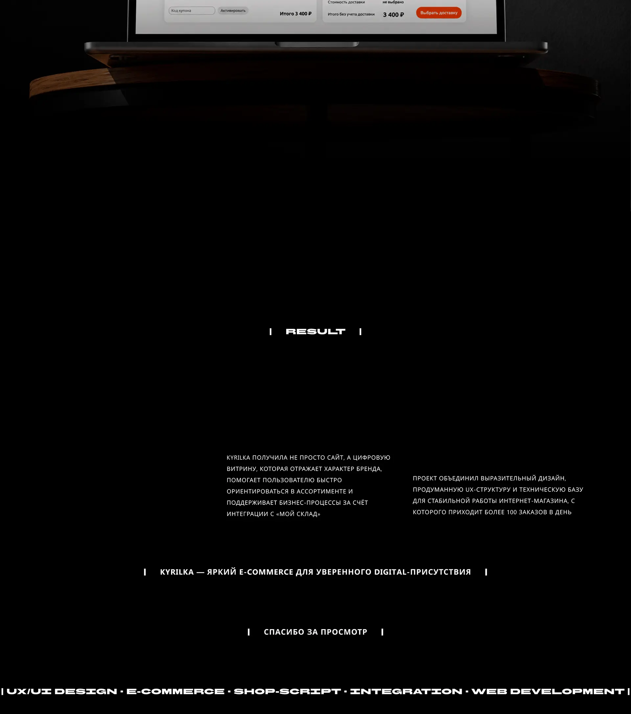

INTERDIZ / ДИЗАЙН И РАЗРАБОТКА
KYRILKA
ЦИФРОВАЯ
ВИТРИНА.
Дизайн и разработка интернет-магазина для совершеннолетней аудитории.
О ПРОЕКТЕ
ЯРКИЙ СТИЛЬ.
ПОНЯТНЫЙ ВЫБОР.
Kyrilka — интернет-магазин с выразительным визуальным стилем, удобным каталогом и понятным путём к оформлению заказа.
Проект объединяет дизайн интерфейса, разработку на Shop-Script и интеграцию с системой учёта «Мой склад».
ЗАДАЧА
ХАРАКТЕР
В ДЕТАЛЯХ.
Нужно было создать узнаваемую витрину с удобной навигацией по категориям, карточками товаров, корзиной и логичным сценарием заказа.
Интеграция с учётной системой помогает поддерживать актуальность товаров, цен и остатков.
ВИЗУАЛЬНЫЙ ЯЗЫК
КОНТРАСТ,
КОТОРЫЙ РАБОТАЕТ.
Чёрный, белый и насыщенный оранжевый формируют характер магазина. Акцентный цвет выделяет категории, кнопки и важные действия.
UX / UI
ОТ ВИТРИНЫ
К ЗАКАЗУ.
Главная страница знакомит с ассортиментом и популярными категориями. Сетка товаров и заметные кнопки помогают быстрее найти нужное и перейти к покупке.
ИНТЕГРАЦИЯ
ДИЗАЙН
И ТЕХНОЛОГИИ.
На базе Shop-Script настроены каталог, корзина и оформление заказа. Интеграция с «Моим складом» связывает товары, цены и остатки с учётной системой.
РЕЗУЛЬТАТ
ЦЕЛЬНАЯ
ЦИФРОВАЯ ВИТРИНА.
Проект объединил выразительный дизайн, продуманную структуру и техническую основу интернет-магазина.
Посмотреть оригинальную презентацию









